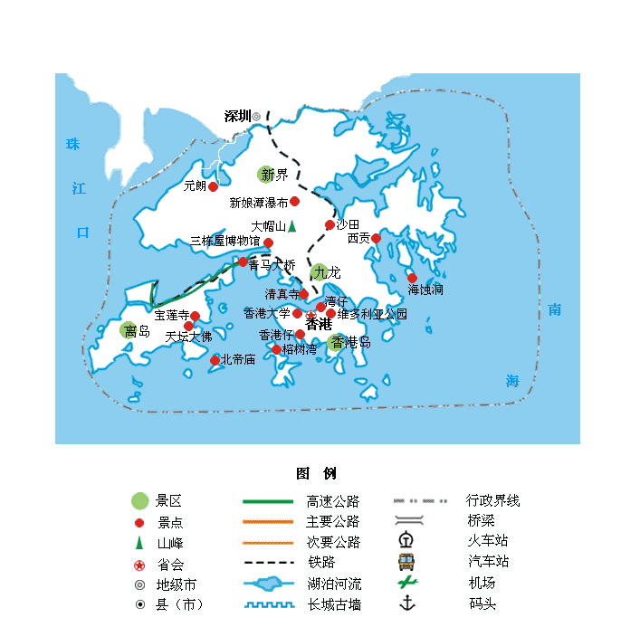

| | | | | |
| - | - | - | - | - |
|<b>别名</b>|香江、香岛、东方之珠||<b>著名景点</b>|维多利亚港、香港迪士尼乐园、海洋公园、香港杜莎夫人蜡像馆等|
|<b>行政区类别</b>|特别行政区||<b>机 场</b>|香港国际机场|
|<b>所属地区</b>|中国华南||<b>火车站</b>|红磡站、西九龙站等|
|<b>下辖地区</b>|香港岛、九龙半岛、新界，共18区||<b>车牌代码</b>|粤Z（进入内地）|
|<b>电话区号</b>|+852||<b>GDP</b>|26626.37亿港元（2017年）|
|<b>邮政区码</b>|999077||<b>人均GDP</b>|360220港元（2017年）|
|<b>地理位置</b>|珠江三角洲东南部，珠江口东岸，南海北部||<b>高等院校</b>|香港大学、香港中文大学等|
|<b>面 积</b>|1106.34平方公里||<b>时 区</b>|GMT+8（北京时间）|
|<b>人 口</b>|740.98万人（2017年）||<b>货 币</b>|港元（HK$）|
|<b>方 言</b>|粤语（广府话、围头话），客家话||<b>道路通行规则</b>|靠左驾驶|
|<b>气候条件</b>|亚热带季风气候||<b>地区代码</b>|HKG|
|-|-||<b>官方语言</b>|中文、英文|
|-|-||<b>政治体制</b>|行政主导的代议民主制|
|-|-||<b>法律体系</b>|英美法系|
|-|-||<b>首任行政长官</b>|董建华|
|-|-||<b>现任行政长官</b>|林郑月娥|
| <b>香港旅游攻略</b> | <b>香港旅游必去景点</b> | <b>香港旅游注意事项</b> | <b>港澳台</b> | <b>其它</b> |
| - | - | - | - | - |
| <a href="javascript:;" onclick="strategy(this);">香港旅游攻略</a> | <a href="javascript:;" onclick="scene(this);">维多利亚港</a> | <a href="javascript:;" onclick="notes(this);">香港旅游注意事项</a> | <a href="javascript:;" onclick="tips(this);">港澳台旅游小贴士</a> | - |
| - | <a href="javascript:;" onclick="scene(this);">香港迪士尼乐园</a> | - | <a href="introduce.html">港澳台简介</a> | - |
| - | <a href="javascript:;" onclick="scene(this);">香港海洋公园</a> | - | <a href="permit.html">港澳台通行证</a> | - |
| - | <a href="javascript:;" onclick="scene(this);">黄大仙祠</a> | - |-|-|
| - | <a href="javascript:;" onclick="scene(this);">昂坪360缆车</a> | -|-|-|
| - | <a href="javascript:;" onclick="scene(this);">天际100</a> | -|-|-|
| - | <a href="javascript:;" onclick="scene(this);">南丫岛</a> | -|-|-|
| - | <a href="javascript:;" onclick="scene(this);">天星小轮</a> | -|-|-|
| - | <a href="javascript:;" onclick="scene(this);">星光大道</a> | -|-|-|
| - | <a href="javascript:;" onclick="scene(this);">太平山</a> | -|-|-|
## <i class="fa fa-file-text-o"></i>&nbsp;目录（Table of Contents）
+ [I. 总路线图（暂无）](#one)
+ [II. 景点](#two)
+ [III. 路线规划（暂无）](#three)
<h2 id="two"><i class="fa fa-star-o"></i>&nbsp;景点</h2>
